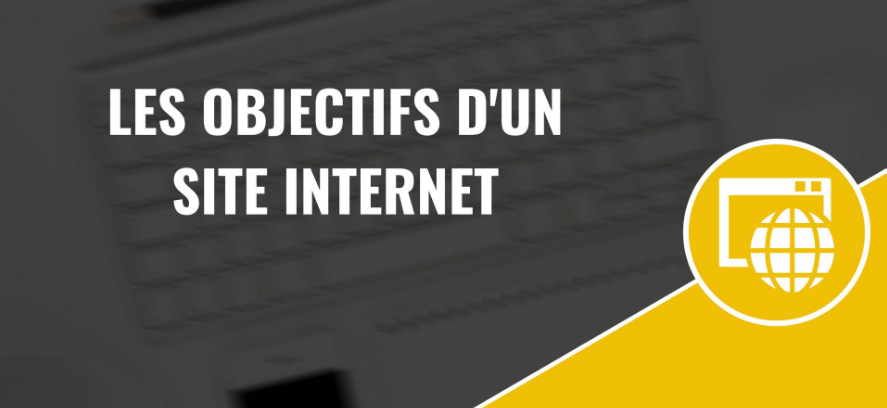
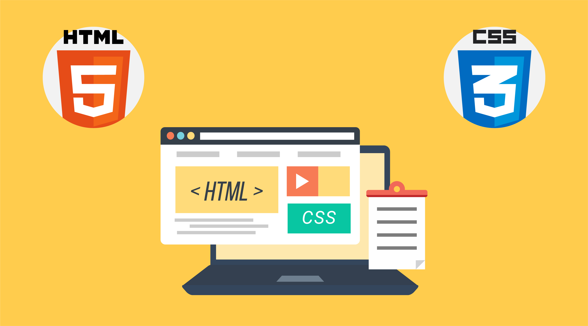
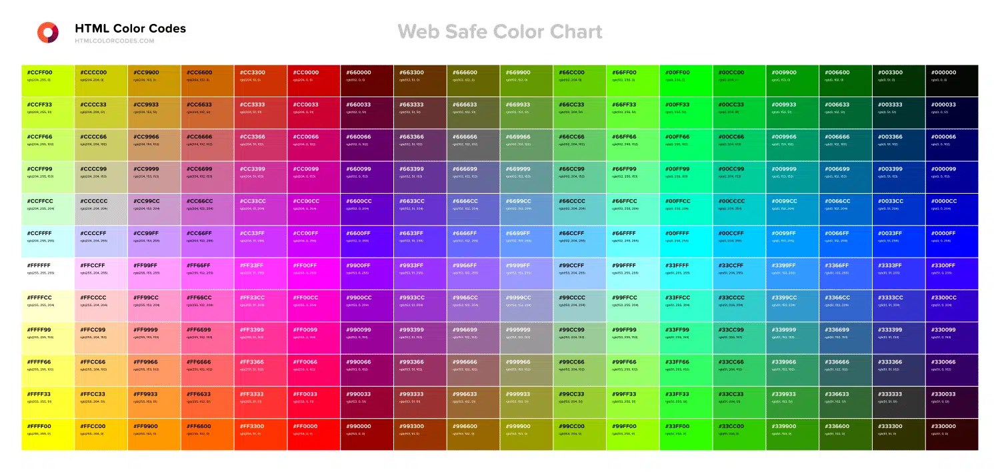

Visibilité & Accessibilité
Les objectifs de ce projet son multiple, le premier d'entre eux et la visibilité et l’accessibilité. Le site agit comme
la porte d'entrée virtuelle de l’entreprise, cela permettant aux clients potentiels de découvrir facilement qui ils
sont, ce qu’ils font, et comment ils peuvent les aider.

Confiance & Crédibilité
Le deuxième objectif est la confiance et la crédibilité Le site offre une vitrine professionnelle de l’entreprise,
mettant en avant l’expertise, les compétences et l’expérience dans le domaine de la rénovation et de la maçonnerie.
Et pour finir le dernier objectif est l’information. Le site fournit des informations détaillées sur les services
qu’offre l’entreprise.
HTML & CSS
HTML a été utilisé pour créer une structure claire et sémantique du contenu du site. Cela garantit une compréhension
efficace des moteurs de recherche. Les balises HTML ont été soigneusement sélectionnées pour intégrer des éléments de
manière fluide.
CSS a été utilisé pour définir le design visuel du site, en s'assurant de la cohérence des couleurs, des polices et des
mises en page.

Compatibilité
Les feuilles de style CSS ont été optimisées pour assurer la compatibilité avec les différents dispositifs et tailles
d'écrans, garantissant une expérience utilisateur fluide sur ordinateurs, tablettes et smartphones.

JavaScript
JavaScript a été employé pour ajouter des fonctionnalités interactives au site, améliorant ainsi l'engagement des
utilisateurs. Cela inclut des animations, des effets visuels et des éléments interactifs tels que des carrousels.

Teintes Naturelles
En optant pour des teintes naturelles comme le vert et le beige, nous nous distinguons délibérément des conventions
visuelles de nombreux sites de maçonnerie qui utilisent souvent du jaune, du noir et de l'orange. Cette différenciation
visuelle crée un impact et attire l'attention des visiteurs.
L'inclusion d'images ouvertes de paysages et de chantiers renforce l'idée d'espace et de profondeur.

Revenir en arrière